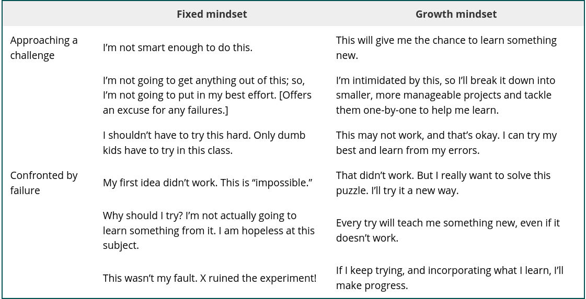

2025-08-22 First Day#
Principles of Numerical Computation#
Instructor: Jed Brown, jed.brown@colorado.edu, ECOT 824#
Who am I?
What is this course about?
How will it work?
Discussion
exp()demo
using Plots
default(linewidth=3, legendfontsize=12, xtickfontsize=12, ytickfontsize=12)
Positionality: Who am I?#
Jed Brown (he/him); you can call me Jed
Math + Physics undergrad, MS Math, Dr.Sc. Environmental Engineering (Computational Glaciology)
Postdoc and staff at Argonne National Laboratory (DOE Office of Science)
CU since 2015
Cis-het white man (which unavoidably affects my experience in these spaces)
Physical Prediction, Inference, and Design Group#
Develop and maintain open source libraries
Research in fast/parallel algorithms, extensible software
Partner with scientists and engineers in many disciplines: geoscience, aerospace, civil engineering, fusion
Listen, learn about computational bottlenecks, build technology and communities
Prerequisites#
Calculus#
Fundamental Theorem of Calculus
Differentiate and integrate polynomials
Taylor series
Gradients
Linear Algebra#
vector spaces, orthogonality
QR factorization
projectors, reflectors, and rotations (will teach)
We’ll never compute RREF or eigenvalues by hand (and any time you spent on that was a waste; sorry)
What is Numerical Computation?#
From Trefethen (1992)
Here is the wrong answer:
Numerical analysis is the study of rounding errors.
Trefethen goes on to propose
Numerical analysis is the study of algorithms for the problems of continuous mathematics.
This stuff is like computer science meets calculus
– former student
What is continuous mathematics?#
Continuous objects with finite representations on a computer
real and complex numbers \(a \in \mathbb R\)
vectors \(\mathbf x \in \mathbb R^n\)
matrices \(A \in \mathbb R^{m\times n}\)
Continuous objects with infinite representations on a computer
functions \(f: \mathbb R \to \mathbb R\)
higher order functions: \(g(f)\)
Finite vs Infinite algorithms#
Compute the matrix product \(A B\)
Solve \(A x = b\) for \(x\)
Compute the eigenvalues \(\lambda\) of \(A \in \mathbb R^{10\times 10}\)
Compute \(\int_a^b f(x)\)
Rootfinding#
Given \(f(x)\), find \(x\) such that \(f(x) = 0\).
Cost
Evaluation of \(f(x)\) and perhaps derivatives \(f'(x)\).
Other arithmetic
Convergence: how many evaluations to reach a given accuracy?
Robustness: does the algorithm always converge?
using Plots
f(x) = exp(x) * cos(x) + 1
plot([f, x -> 0], xlims=[-2.5, 5])
Numerical linear algebra#
Finite algorithms for factorization#
\(QR = A\), such that \(Q^T Q = I\) and \(R\) is right-triangular.
\(L U = A\), such that \(L\) and \(U\) are lower and upper triangular, respectively.
Infinite (iterative) algorithms#
\(X \Lambda X^{-1} = A\) where \(\Lambda\) is diagonal.
\(U \Sigma V^T = A\), such that \(U^T U = I\), \(V^T V = I\), and \(\Sigma\) is diagonal with nonnegative entries.
Iterative solution of \(Ax=b\) using Krylov basis \(\{b, Ab, A^2b, \dotsc \}\)
Concepts#
Accurate estimates of cost
Orthogonality, null spaces, projections
Geometry and modeling
Stable and backwards-stable algorithms
Conditioning
Develop a language in which to frame many concepts in the course
Approximating functions from data#
Interpolation#
Given samples \((x_0, f(x_0)), (x_1, f(x_1)), \dotsc\), determine an easily-computable function \(g(x)\) that exactly fits these samples and behaves sensibly in between.
Regression#
Given noisy data \((x_0, y_0), (x_1, y_1), \dotsc\), determine an easily-computable function \(g(x)\) that explains these data.
We will need to make subjective choices to specify a problem with a unique solution.
Calculus: functions of functions#
Differentiation#
Given a function \(f(x)\) (as a computer program or callable function), define a new function
We can do this
Numerically (black box)
By-hand code transformation
Automatic code transformation
Integration#
Given a function \(f(x)\) (as a computer program or callable function), approximate the integral
Numerical optimization#
Given a scalar function \(f(x)\) (and perhaps its gradient \(f'(x)\)), determine
Differential equations#
Given a dynamical system
Higher dimensions#
Many of these algorithms will generalize to functions of multiple variables. Different algorithms may be needed for such “high-dimensional” problems.
Computer Science = Runnable Abstraction Science#
In the “grinder”#
Mathematical language and principles for each major class of method
What is covered by theory
When you’re venturing off-trail
Analytic tools to predict and debug
Realistic cost and exploitable structure
Performance on modern hardware
Write/modify stand-alone code
Select and use (parallel) libraries
How can you trust the solution?#
Verification: solving the problem right
Validation: solving the right problem
Abstractions/collaboration#
Domain scientists, engineers
Optimizers, statisticians
Abstractions that reduce cognitive load
Metrics/visualization for decisions
On programming languages#
C#
Reliable and popular for libraries (PETSc, etc.). “Simple”, unsafe, capable of encapsulation.
C++#
Popular with applications and some libraries. Powerful, but complicated and unsafe.
Fortran#
The OG of numerical computing. Good for “array programming”, but encapsulation is hard. Unsafe depending on dialect.
Julia#
For ground-up examples in class and in activities. Capable of high performance, expressive multiple dispatch, works well in a notebook. Error messages are not great.
Python#
Good access to JIT, though with sharp edges. Poor native performance, but good libraries to compiled code.
Rust#
New compiled language. Good performance, encapsulation, safety, static analysis. Poor libraries (so far).
You don’t need to know any of these well and you can choose the language for your project.

I won’t grade and I won’t waste your time#
I will provide feedback
I will be a mentor and guide navigating this field
I will help you get what you want out of the class (with a dash of wholesome context)
My mom said, “basically, your professor is asking you to be an adult”. That was too flexible.
In other classes, I didn’t feel like I could bounce back, but in this one I did.

Formative vs Summative Assessment#
Formative#
Continual component of learning
Check our understanding
Guide next steps
Collaborative
Develops self-direction
Surrounded by formative assessment throughout our careers
Learn to recognize these opportunities
Summative#
Instructor evaluation of student understanding after a unit
Driven by a need for “fairness” and “objectivity”
Permeates culture and goals of a class
Stifles creativity
Often adversarial
Goal is scoring/ranking, not learning itself
Feels “cheap” when encountered in careers
This class centers formative assessment and the process by which you respond and reflect on it.
What about the letter grade?#
Collect a portfolio of the work and insights you’re most proud of
You can follow your creativity
Journaling through the semester (setting goals, reflecting on formative assessments)
Individual meetings during the last week of the semester (mid-term preview)
We’ll have a conversation and you’ll propose a grade based on your portfolio
I’ll trust you.
I can nudge upward when students are too modest – pretty common. In rare cases, I may adjust down.
What I need from you: Growth Mindset#
How will the semester look?#
Lecture periods#
Refresh, introduce, activity/group discussion, reflect
Pointers to further resources/activities
Readings and activities#
Annotate assigned readings
(Short) coding, experiments, presentation of results
Use the math and programming tools of the field
Open-ended, go further occasionally
Learning plans#
Write, track, and revise a personal learning plan.
Meet/chat approx weekly to check in with partner
Projects (second half of semester)#
Dig into community software that implements or relies on numerical computation
Short presentation on how the community works
Key stakeholders
Strengths and weaknesses
Discuss and critique
Original study or contribution#
Tutorial, documentation, performance study, comparison, new features, new application
Reflect in a short presentation
Expectations#
Enter with a growth mindset, practice adaptive coping, and nurture your intrinsic motivation
Attend class (in-person or virtual) and participate in discussions
Annotate assigned readings and respond thoughtfully to prompts
Make an honest attempt on activities
Interact with the class notebooks and read reference material 6 Set goals and track your progress
revise these goals as you learn more
Meet/chat with your partner weekly for at least a few minutes
share how lecture and activities are going
share your goals and how you’re progressing
identify questions
Ask or answer at least one question per week
ask a question that you don’t know the answer to
ask a question that you do know the answer to, but you think will be a good exercise/seed for discussion
ask me during office hours, write up your best understanding
make a meme relevant to the class
raise a concern or suggestion that you and/or peers have
contribute an answer or relevant discussion to any of the above
Individual and group projects
Advice from last year#
“What advice would you give to your former self at the start of the term?”
Come in with “learn as much as you can” rather than “get good grade”.
Don’t get overwhelmed by “big dense equations”. Pay attention to initial concepts (stability, conditioning).
Be serious about linear algebra.
Take more initiative about how to manage time and structuring personal goals.
Take your time and play with all the buttons, not “completionist”.
Calm down and really write the functions, visualize, and experiment. Biggest regret was not engaging with programming activities to build concepts from class independently.
Take things slow and don’t stress. Stay on top of topics, attend class, you’ll be okay.
Tools#
Git and GitHub#
GitHub Classroom to manage repositories
Write using notebooks and markdown
Review using GitHub tools and nbgrader
Zulip#
math- and code-aware team chat
live, informal
thread managemnet so a question in class can spin off into a deeper asynchronous conversation
Jupyter#
RISE slides available on website
Activities with scaffolding
Nbgrader for writing feedback
Works with many languages; we’ll mostly use Julia
Collaborative mode (new)
JupyterHub: coding.csel.io#
Nothing to install, persistent storage
Select
Numerical Computationtile
Poll: What is floating point arithmetic?#
fuzzy arithmetic
exact arithmetic, correctly rounded
the primary focus of numerical analysis
0.1 + 0.2
0.30000000000000004
a = 1e-15
plot(x -> 1 + x, xlim=(-a, a), legend=:none)
GKS: Possible loss of precision in routine SET_WINDOW
Machine epsilon#
We approximate real numbers with floating point arithmetic, which can only represent discrete values. In particular, there exists a largest number, which we call \(\epsilon_{\text{machine}}\), such that
The notation \(\oplus, \ominus, \odot, \oslash\) represent the elementary operation carried out in floating point arithmetic.
eps = 1
while 1 + eps != 1
eps = eps / 2
end
eps
1.1102230246251565e-16
Beating exp#
Suppose we want to compute \(f(x) = e^x - 1\) for small values of \(x\).
f1(x) = exp(x) - 1
y1 = f1(1e-8)
9.99999993922529e-9
f2(x) = x + x^2/2 + x^3/6
y2 = f2(1e-8)
1.000000005e-8
Which answer is more accurate?
@show (y1 - y2) # Absolute difference
@show (y1 - y2) / y2; # Relative difference
y1 - y2 = -1.1077470910720506e-16
(y1 - y2) / y2 = -1.1077470855333152e-8